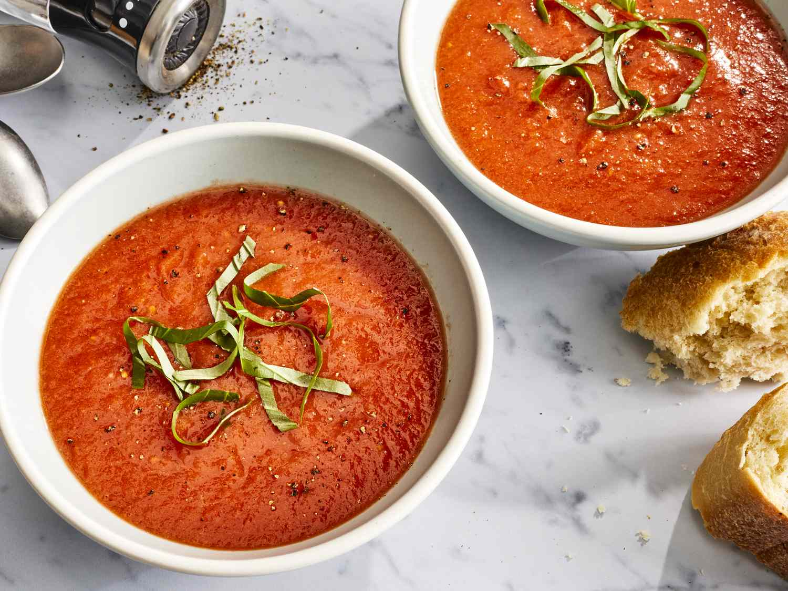

Fresh Tomato Soup

Description
Experience the taste of pure comfort with our fresh tomato soup—a celebration of the season's finest produce. Bursting with the vibrant flavors of ripe tomatoes, this homemade soup is a heartwarming treat for all occasions. Simple yet incredibly satisfying, the recipe calls for just a handful of ingredients that allow the tomatoes to shine.
Ingredients
- Fresh tomatoes (about 1.5 to 2 pounds, preferably ripe and flavorful)
- Onion (1 medium-sized, finely chopped)
- Garlic cloves (2-3 cloves, minced)
- Sugar (1 teaspoon)
- Vegetable broth (4 cups)
- Heavy cream (1/2 cup)
- Salt (to taste)
- Freshly ground black pepper (to taste)
- Fresh basil or parsley (for garnish)
Steps
- Blanch and Peel the Tomatoes: Bring a pot of water to a boil. Cut a small "X" on the bottom of each tomato. Carefully lower the tomatoes into the boiling water for about 30 seconds. Remove them using a slotted spoon and immediately transfer them to a bowl of ice water. Once they cool down, peel off the skin starting from the "X" mark. Dice the peeled tomatoes and set them aside.
- Saute Onions and Garlic: In a large pot, heat a tablespoon of oil or butter over medium heat. Add the finely chopped onion and sauté until it becomes translucent and slightly golden. Stir in the minced garlic and cook for an additional 30 seconds, being careful not to burn the garlic.
- Cook the Tomatoes: Add the diced tomatoes to the pot with the onions and garlic. Sprinkle the sugar over the tomatoes to enhance their sweetness. Stir well and let the mixture cook for about 5 minutes, allowing the flavors to meld.
- Simmer with Vegetable Broth: Pour in the vegetable broth and bring the mixture to a gentle simmer. Let it cook for about 15-20 minutes, allowing the tomatoes to soften and the flavors to develop.
- Blend the Soup: Carefully transfer the soup to a blender, or use an immersion blender directly in the pot. Blend until smooth and creamy.
- Add Heavy Cream: Return the blended soup to the pot (if using a blender) and stir in the heavy cream. Mix well, and then season with salt and freshly ground black pepper to taste.
- Garnish and Serve: Ladle the fresh tomato soup into bowls. Garnish each serving with fresh basil or parsley for a burst of flavor and a beautiful presentation.
- Enjoy Your Fresh Tomato Soup: Serve the soup hot with a side of crusty bread or your favorite grilled cheese sandwich. Savor the comforting taste of ripe tomatoes and indulge in the goodness of this delightful homemade soup.